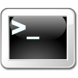

Polecenie to czynność wykonywana po naciśnięciu przycisku na pasku narzędzi lub wpisaniu skrótu klawiaturowego. Może to być bardzo prosta czynność, jak zmiana stopnia powiększenia widoku 3D lub obrót punktu widzenia, albo złożony system, który będzie otwierał okna dialogowe i czekał na wykonanie przez użytkownika określonych zadań.
Każde polecenie FreeCAD ma unikalną nazwę, która pojawia się na stronie :Category:Command Reference. Polecenia mogą być uruchamiane za pomocą przycisku paska narzędzi, pozycji menu lub ze skryptu Python lub konsoli Python, poprzez uruchomienie:
FreeCADGui.runCommand("my_Command_Name")
Polecenia FreeCAD są definiowane dla każdego środowiska pracy. Środowiska pracy zwykle dodają swoje definicje poleceń w czasie inicjowania FreeCAD, więc polecenie istnieje i jest dostępne natychmiast po uruchomieniu FreeCAD, bez względu na to, czy odpowiednie środowisko pracy zostało już aktywowane, czy nie. W niektórych przypadkach jednak autor środowiska pracy mógł zdecydować się nie przeciążać/obciążać procesu uruchamiania FreeCAD i dlatego załadował definicje poleceń tylko podczas inicjowania środowiska pracy. W takich przypadkach polecenie będzie dostępne dopiero po aktywacji środowiska pracy (po przełączeniu się na nie co najmniej raz za pomocą selektora środowiska pracy).
Ponieważ większość z nich wymaga interakcji użytkownika, polecenia FreeCAD są dostępne tylko w trybie GUI, a nie w trybie konsoli. Jednak dla wygody większość poleceń FreeCAD będzie miała odpowiadającą im funkcję środowiska Python (jak Part.makeBox lub Draft.makeLine), lub wykona kod, który jest bardzo łatwy do odtworzenia w skrypcie Python i / lub makrodefinicjach.
Polecenia mogą być definiowane w języku C++ lub Python.
Przykład definicji polecenia w języku C++, zwykle zdefiniowany zgodnie ze strukturą Mod/ModuleName/Gui/Command.cpp.
DEF_STD_CMD_A(StdCmdMyCommand);
StdCmdMyCommand::StdCmdMyCommand()
: Command("Std_My_Command")
{
sGroup = QT_TR_NOOP("File");
sMenuText = QT_TR_NOOP("My Command");
sToolTipText = QT_TR_NOOP("Runs my command in the active document");
sWhatsThis = "Std_MyCommand";
sStatusTip = QT_TR_NOOP("Runs my command in the active document");
sPixmap = "MyCommand.svg";
sAccel = "Ctrl+A";
}
void StdCmdExport::activated(int iMsg)
{
// place here the code to be executed when the command is ran
}
bool StdCmdMyCommand::isActive(void)
{
// here you have a chance to return true or false depending if your command must be shown as active or inactive (greyed).
}
// the command must be "registered" in FreeCAD's command system
CommandManager &rcCmdMgr = Application::Instance->commandManager();
rcCmdMgr.addCommand(new StdCmdMyCommand());
Przykład definicji polecenia Python, może być umieszczony w katalogu takim jak Mod/ModuleName/tools/commands.py.
from PySide.QtCore import QT_TRANSLATE_NOOP
class MyCommand:
"""Explanation of the command."""
def __init__(self):
"""Initialize variables for the command that must exist at all times."""
pass
def GetResources(self):
"""Return a dictionary with data that will be used by the button or menu item."""
return {'Pixmap': 'MyCommand.svg',
'Accel': "Ctrl+A",
'MenuText': QT_TRANSLATE_NOOP("My_Command", "My Command"),
'ToolTip': QT_TRANSLATE_NOOP("My_Command", "Runs my command in the active document")}
def Activated(self):
"""Run the following code when the command is activated (button press)."""
print("Activated")
def IsActive(self):
"""Return True when the command should be active or False when it should be disabled (greyed)."""
return True
# The command must be "registered" with a unique name by calling its class.
FreeCADGui.addCommand('My_Command', MyCommand())
# Important note for translations:
# The context used in QT_TRANSLATE_NOOP must be the name of the command. (My_Command in this example)
Zobacz stronę Funkcja rysowania linii.
